All 18 NeetCode graph problems, one story per algorithm
Think of every graph as a city map: places connected by roads. Every graph problem is about moving around that map in a smart way.
node. Number on the sign = node.val or grid[r][c].
graph[node].
visited set. Check: if node in visited: return. Mark: visited.add(node).
graph = {A: [B, C], B: [A, D]}'1', Water = '0'.
node or grid[r][c]graph[node] = list of neighborsvisited.add(node)for nei in graph[node]grid[r][c], 4-directionalgraph[node] = [(nei, weight)]find(x) == find(y)def dfs(node):deque([start])in_degree[node]parent[], find(), union()heapq, dist[], settledFour questions. That's all you need to pick the right scene for ANY graph problem.
Each scene is a ritual. Each step in the ritual maps to exactly one line of code. Memorize the ritual, you've memorized the algorithm.
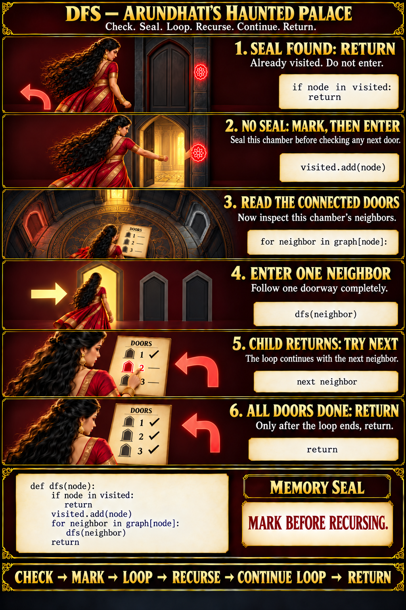
def dfs(r, c):
if r < 0 or r >= R or c < 0 or c >= C or grid[r][c] == '0':
return # off map, wall, or sealed
grid[r][c] = '0' # seal it
for dr, dc in [(1,0),(-1,0),(0,1),(0,-1)]:
dfs(r + dr, c + dc) # try every doorfor nei in graph[node]:
dfs(nei)
visited.add(node) # TOO LATE!
# Same chamber entered again = infinite loopvisited.add(node) # seal FIRST
for nei in graph[node]:
dfs(nei) # then exploredef dfs(r, c):
grid[r][c] = '0'
# IndexError when r or c is out of bounds!def dfs(r, c):
if r<0 or r>=R or c<0 or c>=C:
return # off the map!
if grid[r][c] == '0':
return # wall or visited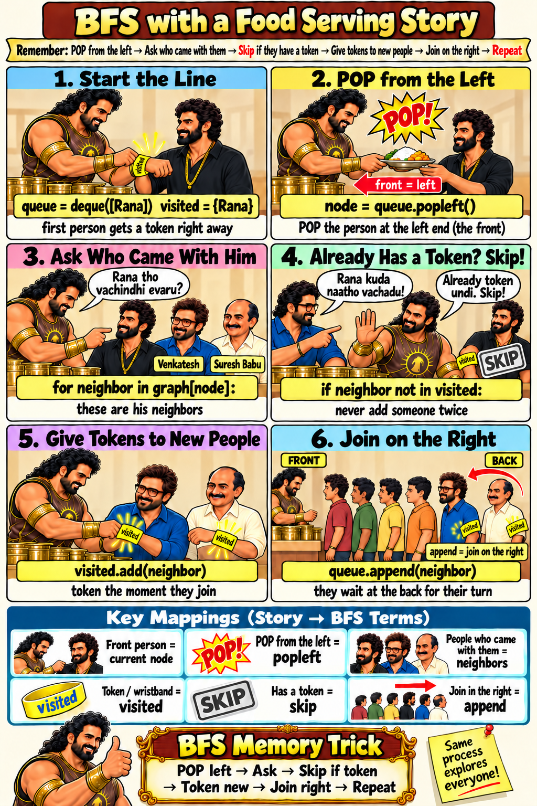
node = q.popleft()
visited.add(node) # TOO LATE!
# Venkatesh came with 3 people,
# so he joins the line 3 timesif nei not in visited:
visited.add(nei) # wristband NOW
q.append(nei) # then join
# Nobody stands in line twice!while q:
node = q.popleft()
# How many rounds? No idea!
# Can't count levels.while q:
for _ in range(len(q)): # this round
node = q.popleft()
rounds += 1 # round done!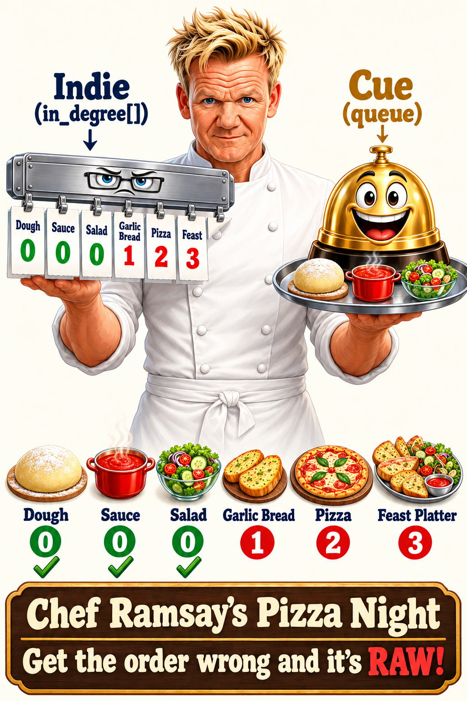
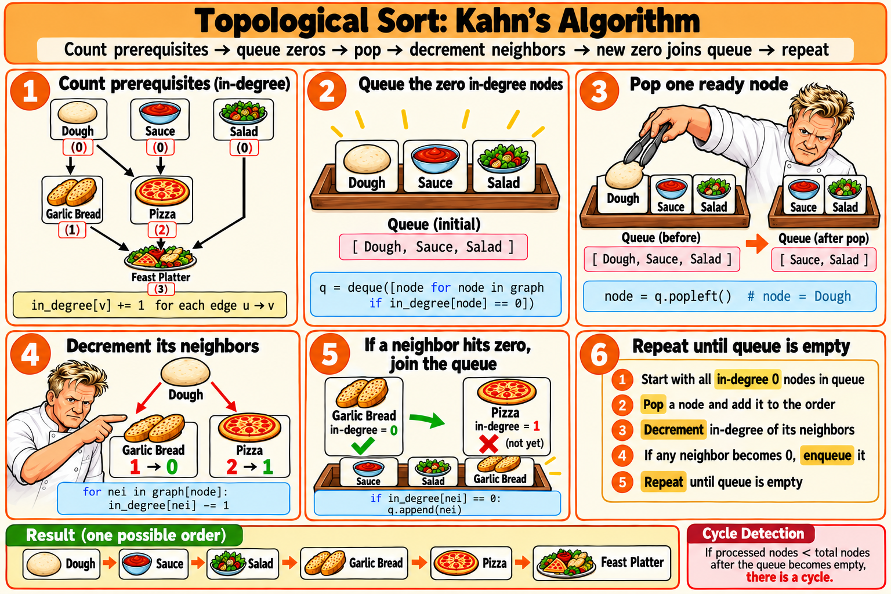
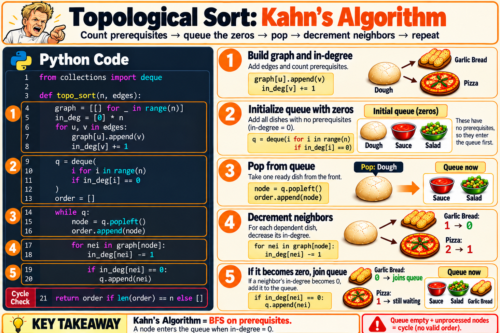
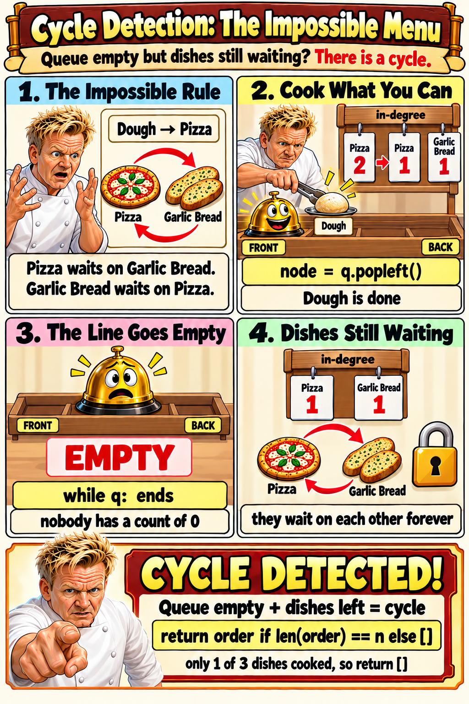
for u, v in edges:
in_deg[v] += 1
# but where is graph[u].append(v)?
# Can't find neighbors later!for u, v in edges:
graph[u].append(v)
in_deg[v] += 1return order # What if len(order) < n?
# Some dishes were in a cycle
# and never reached 0!if len(order) != n:
return [] # cycle detected!
return order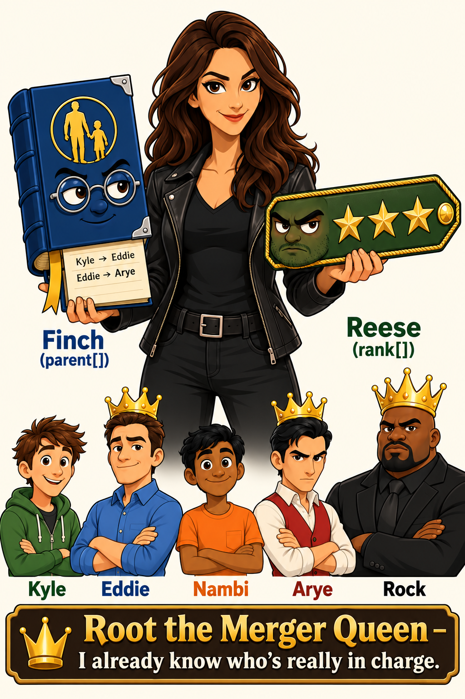
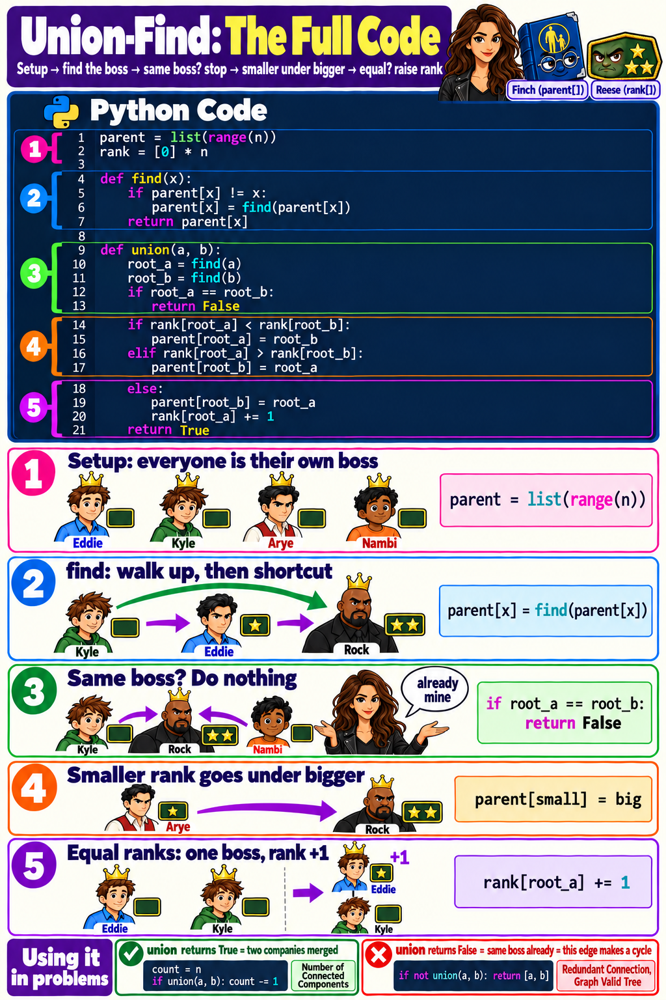
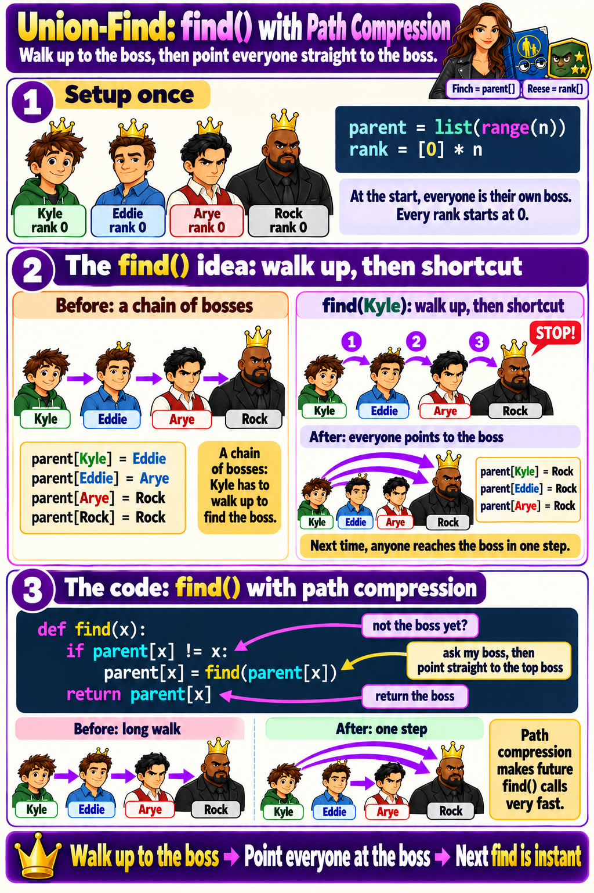
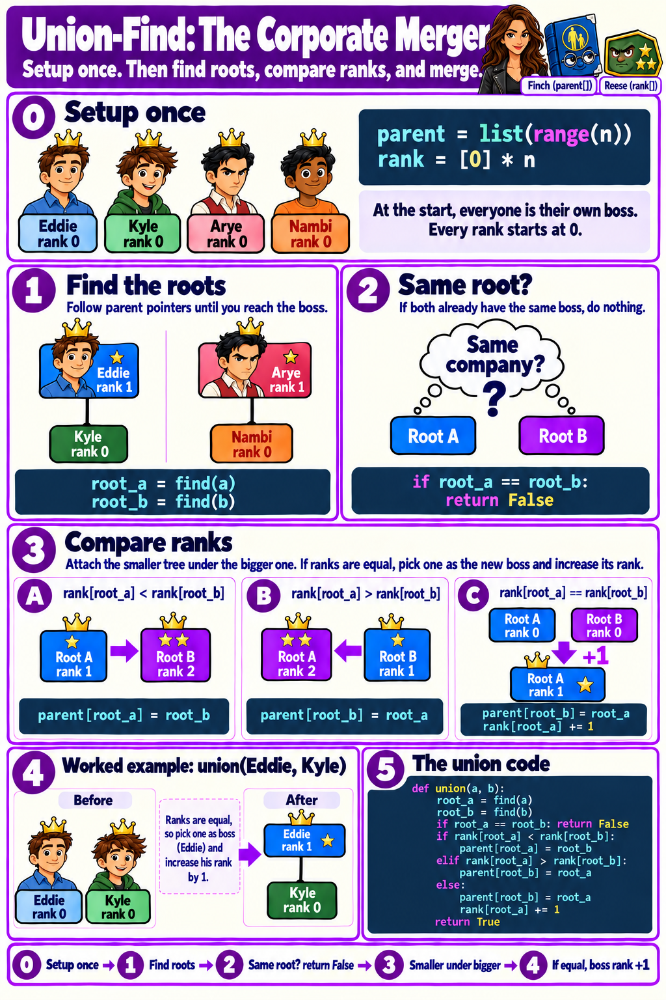
def find(x):
while parent[x] != x:
x = parent[x]
return x
# Works but O(n) per find in worst casedef find(x):
if parent[x] != x:
parent[x] = find(parent[x])
return parent[x]
# O(α(n)) ≈ O(1) amortizedparent[a] = b # Direct assignment!
# Breaks up existing companiesroot_a, root_b = find(a), find(b)
if root_a == root_b: return False
parent[root_b] = root_a # merge the bosses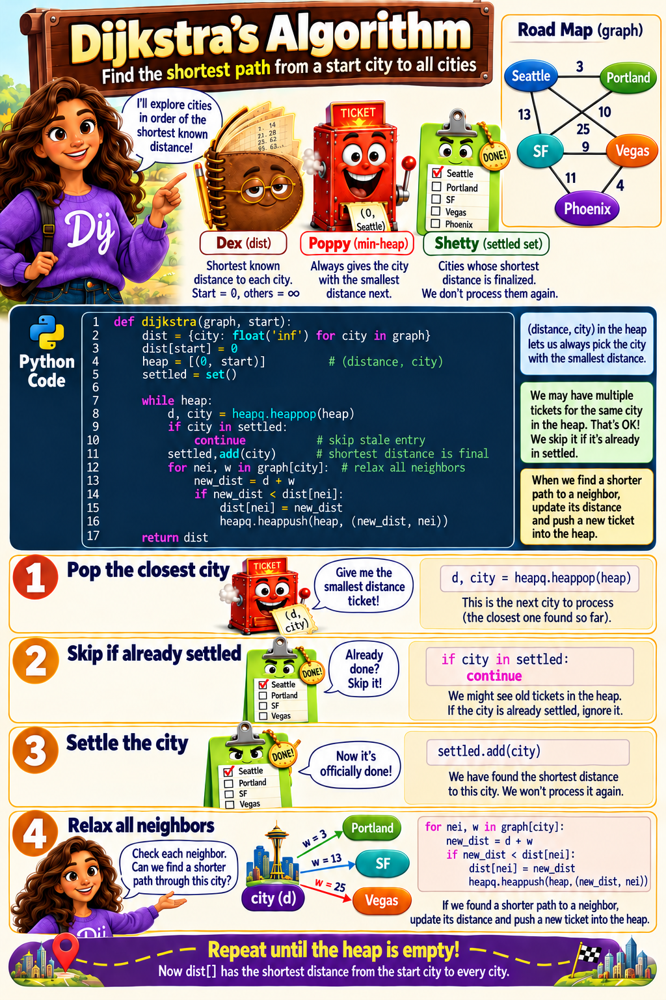
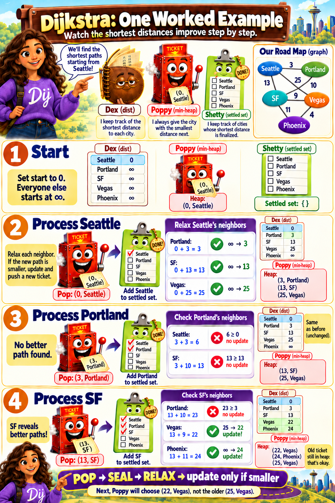
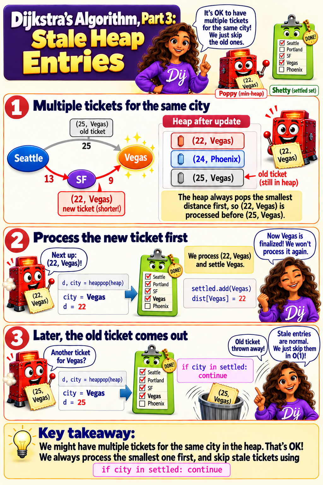
d, city = heappop(heap)
# Processes a city even if already settled!
# Wastes time on stale tickets.d, city = heappop(heap)
if city in settled:
continue # already settled, skip# Road weight = -5?
# Dijkstra assumes: once settled,
# no shorter path exists.
# Negative edges break this!# Negative edges? Use Bellman-Ford:
for _ in range(n-1): # n-1 rounds
for u,v,w in edges: # relax ALL
if dist[u]+w < dist[v]:
dist[v] = dist[u]+w'1' (land) and '0' (water), count the number of islands. An island is surrounded by water and formed by connecting adjacent lands horizontally or vertically.'1')? Starts a new trip. Goes deep through all connected land, marking each cell ('1' → '0'). Trip done = one island found. Move to the next unmarked cell. Count the trips.
'1', start a new trip and add 1 to the count.'1' to '0'. Simpler and faster.
def numIslands(grid):
R, C = len(grid), len(grid[0])
count = 0
def dfs(r, c):
if r < 0 or r >= R or c < 0 or c >= C or grid[r][c] == '0':
return # off map, water, or visited
grid[r][c] = '0' # mark visited
for dr, dc in [(1,0),(-1,0),(0,1),(0,-1)]:
dfs(r + dr, c + dc) # go N/S/E/W
for r in range(R):
for c in range(C):
if grid[r][c] == '1': # unvisited land!
dfs(r, c) # new trip
count += 1 # one more island
return count1 (land) and 0 (water), find the maximum area of an island.1 + sum of all 4 directions. Dead-end returns 0. The total bubbles up as the area of the island.
def maxAreaOfIsland(grid):
R, C = len(grid), len(grid[0])
def dfs(r, c):
if r < 0 or r >= R or c < 0 or c >= C or grid[r][c] == 0:
return 0 # off map or water = 0 cells
grid[r][c] = 0 # mark visited
return 1 + sum(dfs(r+dr, c+dc) # me + all 4 directions
for dr, dc in [(1,0),(-1,0),(0,1),(0,-1)])
return max((dfs(r, c) for r in range(R) for c in range(C)), default=0)visited = set(), use old_to_new = {}. The key is the original node, the value is its clone. This serves as BOTH visited check AND clone storage.def cloneGraph(node):
old_to_new = {} # mirror map: original → clone
def dfs(node):
if node in old_to_new: # already cloned = visited
return old_to_new[node]
clone = Node(node.val) # build replica
old_to_new[node] = clone # register in mirror
for nei in node.neighbors: # map scroll — all roads
clone.neighbors.append(dfs(nei)) # wire cloned roads
return clone
return dfs(node) if node else Nonenext >= current).def pacificAtlantic(heights):
R, C = len(heights), len(heights[0])
pac, atl = set(), set()
def dfs(r, c, visit, prev_h):
if (r,c) in visit or r<0 or r>=R or c<0 or c>=C:
return
if heights[r][c] < prev_h: # can't go downhill (reverse!)
return
visit.add((r, c)) # visited mark for this team
for dr, dc in [(1,0),(-1,0),(0,1),(0,-1)]:
dfs(r+dr, c+dc, visit, heights[r][c])
for c in range(C):
dfs(0, c, pac, 0) # Pacific: top border
dfs(R-1, c, atl, 0) # Atlantic: bottom border
for r in range(R):
dfs(r, 0, pac, 0) # Pacific: left border
dfs(r, C-1, atl, 0) # Atlantic: right border
return list(pac & atl) # both teams reached = answer'X' and 'O', capture all regions of 'O' that are NOT connected to the border. Captured regions are flipped to 'X'.'O' cell on the border and marks them SAFE (temporary mark 'S'). Then sweeps the whole grid: anything still 'O' → captured ('X'). Anything 'S' → restore to 'O'.
'O's to mark safe. (2) Sweep: unmarked 'O' → 'X'. (3) Sweep: 'S' → 'O'.'S') instead of a visited set.
def solve(board):
R, C = len(board), len(board[0])
def dfs(r, c):
if r<0 or r>=R or c<0 or c>=C or board[r][c] != 'O':
return
board[r][c] = 'S' # mark SAFE
for dr, dc in [(1,0),(-1,0),(0,1),(0,-1)]:
dfs(r + dr, c + dc)
for r in range(R): # start from ALL borders
for c in range(C):
if (r in (0, R-1) or c in (0, C-1)) and board[r][c] == 'O':
dfs(r, c)
for r in range(R): # sweep
for c in range(C):
if board[r][c] == 'O': board[r][c] = 'X' # captured!
elif board[r][c] == 'S': board[r][c] = 'O' # restore safe[from, to], reconstruct the itinerary starting from "JFK". Use all tickets exactly once. If multiple valid itineraries, return the lexicographically smallest.pop() gives lexicographically smallest.
def findItinerary(tickets):
graph = defaultdict(list)
for src, dst in sorted(tickets, reverse=True): # reverse sort
graph[src].append(dst) # so pop() gives smallest
route = []
def dfs(node):
while graph[node]: # roads left?
dfs(graph[node].pop()) # take the road (removes it)
route.append(node) # post-order: add AFTER all roads used
dfs("JFK")
return route[::-1] # reverse = correct order0 = empty, 1 = fresh orange, 2 = rotten orange. Every minute, fresh oranges adjacent to rotten ones also rot. Return the minimum minutes until no fresh orange remains, or -1 if impossible.2s on the queue. Count fresh oranges.fresh > 0 after all waves, return -1.
def orangesRotting(grid):
R, C = len(grid), len(grid[0])
q = deque()
fresh = 0
for r in range(R):
for c in range(C):
if grid[r][c] == 2: q.append((r, c)) # all rotten → in line
elif grid[r][c] == 1: fresh += 1 # count fresh
minutes = 0
while q and fresh > 0: # stop if no fresh left
for _ in range(len(q)): # one serving round
r, c = q.popleft()
for dr, dc in [(1,0),(-1,0),(0,1),(0,-1)]:
nr, nc = r+dr, c+dc
if 0<=nr# rot it (wristband)
fresh -= 1
q.append((nr, nc)) # join on the right
minutes += 1 # round done = 1 minute
return minutes if fresh == 0 else -1 -1 = wall, 0 = gate, INF = empty room. Fill each empty room with the distance to its nearest gate.rooms[nr][nc] == INF (only visit unvisited rooms).rooms[nr][nc] = rooms[r][c] + 1 — each wave adds 1 to distance.
def wallsAndGates(rooms):
R, C = len(rooms), len(rooms[0])
INF = 2147483647
q = deque()
for r in range(R):
for c in range(C):
if rooms[r][c] == 0: # gate → in line
q.append((r, c))
while q:
r, c = q.popleft()
for dr, dc in [(1,0),(-1,0),(0,1),(0,-1)]:
nr, nc = r+dr, c+dc
if 0<=nr# distance = parent + 1
q.append((nr, nc)) numCourses courses with prerequisites. Return true if you can finish all courses.[course, prereq] means prereq → course. Return len(order) == numCourses.
def canFinish(numCourses, prerequisites):
graph = defaultdict(list)
in_deg = [0] * numCourses
for crs, pre in prerequisites:
graph[pre].append(crs) # prereq → course
in_deg[crs] += 1 # count what it waits on
q = deque(i for i in range(numCourses) if in_deg[i] == 0)
count = 0
while q:
node = q.popleft() # cook it
count += 1
for nei in graph[node]:
in_deg[nei] -= 1 # reduce deps
if in_deg[nei] == 0:
q.append(nei) # unlocked!
return count == numCourses # everything done?order.append(node) as you process. If len(order) != numCourses, return [].
def findOrder(numCourses, prerequisites):
graph = defaultdict(list)
in_deg = [0] * numCourses
for crs, pre in prerequisites:
graph[pre].append(crs)
in_deg[crs] += 1
q = deque(i for i in range(numCourses) if in_deg[i] == 0)
order = []
while q:
node = q.popleft()
order.append(node) # record conquest order
for nei in graph[node]:
in_deg[nei] -= 1
if in_deg[nei] == 0:
q.append(nei)
return order if len(order) == numCourses else []words[i] vs words[i+1]. Walk both character by character. First mismatch = edge.words[i] is a prefix of words[i+1] but longer, the input is INVALID (return "").def alienOrder(words):
graph = {c: set() for w in words for c in w}
in_deg = {c: 0 for c in graph}
for i in range(len(words) - 1): # compare adjacent words
w1, w2 = words[i], words[i+1]
if len(w1) > len(w2) and w1[:len(w2)] == w2:
return "" # invalid: prefix is longer
for c1, c2 in zip(w1, w2):
if c1 != c2:
if c2 not in graph[c1]:
graph[c1].add(c2) # c1 → c2 edge
in_deg[c2] += 1
break # only first diff matters
q = deque(c for c in in_deg if in_deg[c] == 0)
order = []
while q:
c = q.popleft()
order.append(c)
for nei in graph[c]:
in_deg[nei] -= 1
if in_deg[nei] == 0:
q.append(nei)
return "".join(order) if len(order) == len(in_deg) else ""n nodes and a list of undirected edges, determine if these edges form a valid tree (connected, no cycles).edges != n-1, immediately return False.union() returns False → same company already → cycle.def validTree(n, edges):
if len(edges) != n - 1: return False # tree must have n-1 edges
parent = list(range(n))
rank = [0] * n
def find(x):
if parent[x] != x:
parent[x] = find(parent[x])
return parent[x]
def union(x, y):
px, py = find(x), find(y)
if px == py: return False # same company = cycle!
if rank[px] < rank[py]: px, py = py, px
parent[py] = px
if rank[px] == rank[py]: rank[px] += 1
return True
return all(union(u, v) for u, v in edges)n nodes and a list of undirected edges, find the number of connected components.union() → components -= 1. Final count = answer.
def countComponents(n, edges):
parent = list(range(n))
rank = [0] * n
components = n # start: n clans
def find(x):
if parent[x] != x:
parent[x] = find(parent[x])
return parent[x]
def union(x, y):
nonlocal components
px, py = find(x), find(y)
if px == py: return
if rank[px] < rank[py]: px, py = py, px
parent[py] = px
if rank[px] == rank[py]: rank[px] += 1
components -= 1 # merged! one fewer company
for u, v in edges:
union(u, v)
return componentsunion() returns False (same clan), return that edge.
def findRedundantConnection(edges):
n = len(edges)
parent = list(range(n + 1)) # 1-indexed
rank = [0] * (n + 1)
def find(x):
if parent[x] != x:
parent[x] = find(parent[x])
return parent[x]
def union(x, y):
px, py = find(x), find(y)
if px == py: return False # REDUNDANT!
if rank[px] < rank[py]: px, py = py, px
parent[py] = px
if rank[px] == rank[py]: rank[px] += 1
return True
for u, v in edges:
if not union(u, v): # same company already
return [u, v] # this is the extra roadn nodes with directed weighted edges and a source node k, find how long it takes for a signal to reach ALL nodes. Return -1 if not all reachable.k. After the traversal, the answer is the maximum distance in the dist array — the slowest city to reach determines total time. If any city is still infinity → not all reachable → return -1.
max(dist.values()). If max is infinity, return -1.
def networkDelayTime(times, n, k):
graph = defaultdict(list)
for u, v, w in times:
graph[u].append((v, w))
dist = {i: float('inf') for i in range(1, n+1)}
dist[k] = 0 # start = 0
heap = [(0, k)] # heap queue
settled = set()
while heap:
cost, node = heappop(heap) # pop closest city
if node in settled: continue # already DONE-stamped
settled.add(node)
for nei, w in graph[node]:
nc = cost + w # my dist + road weight
if nc < dist[nei]:
dist[nei] = nc
heappush(heap, (nc, nei))
mx = max(dist.values())
return mx if mx < float('inf') else -1t to swim from (0,0) to (n-1,n-1). At time t, you can be on any cell with elevation ≤ t.cost + weight, use max(cost, grid[nr][nc]). The bottleneck is the highest cell on the path.def swimInWater(grid):
n = len(grid)
visited = set()
heap = [(grid[0][0], 0, 0)] # (elevation, row, col)
while heap:
t, r, c = heappop(heap) # lowest elevation cell
if (r, c) in visited: continue
visited.add((r, c))
if r == n-1 and c == n-1: # reached destination!
return t
for dr, dc in [(1,0),(-1,0),(0,1),(0,-1)]:
nr, nc = r+dr, c+dc
if 0<=nr# cost = max elevation on path src to dst with at most k stops.def findCheapestPrice(n, flights, src, dst, k):
dist = [float('inf')] * n
dist[src] = 0
for _ in range(k + 1): # at most k+1 flights
temp = dist[:] # snapshot! don't mix rounds
for u, v, w in flights:
if dist[u] + w < temp[v]: # read old, write new
temp[v] = dist[u] + w
dist = temp
return dist[dst] if dist[dst] < float('inf') else -1len(visited) == n.|x1-x2| + |y1-y2|.
def minCostConnectPoints(points):
n = len(points)
visited = set()
heap = [(0, 0)] # (cost, point_index)
total = 0
while len(visited) < n:
cost, i = heappop(heap)
if i in visited: continue
visited.add(i)
total += cost # add this road's cost
xi, yi = points[i]
for j in range(n):
if j not in visited:
d = abs(xi - points[j][0]) + abs(yi - points[j][1])
heappush(heap, (d, j)) # potential road
return totalClick each card to reveal the answer.
for nei in graph[node]. The visited-mark-recurse pattern is identical.find(), it's instant. Code: parent[x] = find(parent[x]).| Scene | Character | Algorithm | Key Data Structure | When to Use |
|---|---|---|---|---|
| 1 | Arundhati | DFS | Recursion + visited set | Explore connected regions, traversal, path finding |
| 2 | Prabhas | BFS | Queue (deque) + visited set | Shortest unweighted path, level-by-level, simultaneous spread |
| 3 | Gordon Ramsay | Topological Sort | In-degree array + queue | Prerequisites, ordering, dependency chains |
| 4 | The Board Room | Union-Find | Parent + rank arrays | Merge companies, count components, detect cycles in undirected |
| 5 | Dij the Traveler | Dijkstra / Prim's | Min-heap + dist dict + settled set | Weighted shortest path, MST |